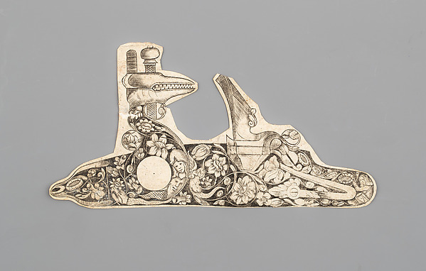
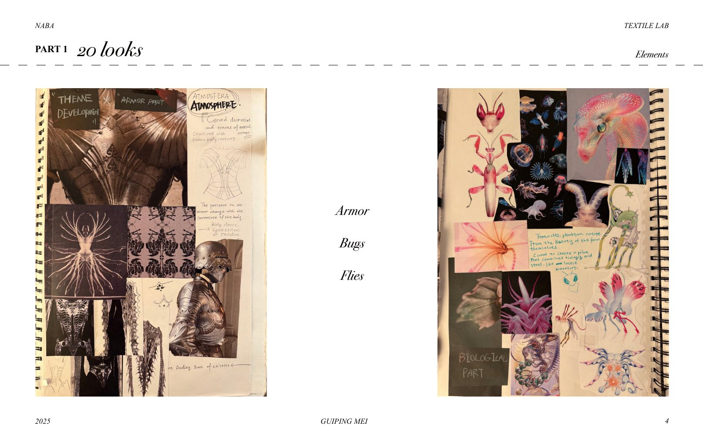
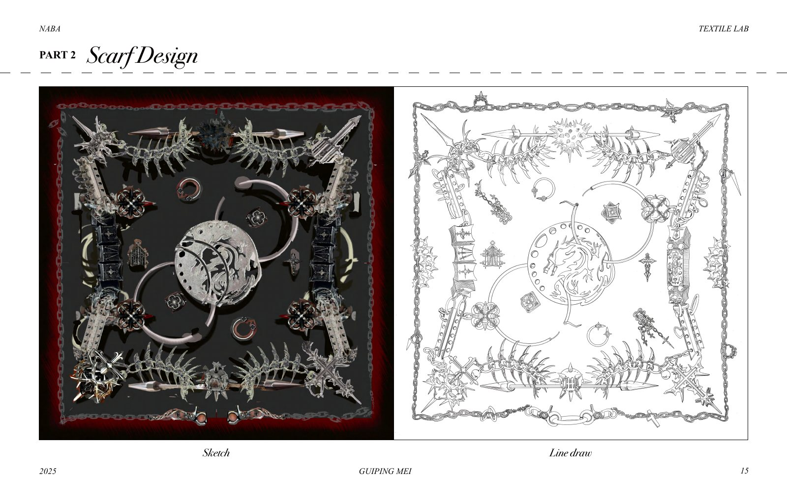
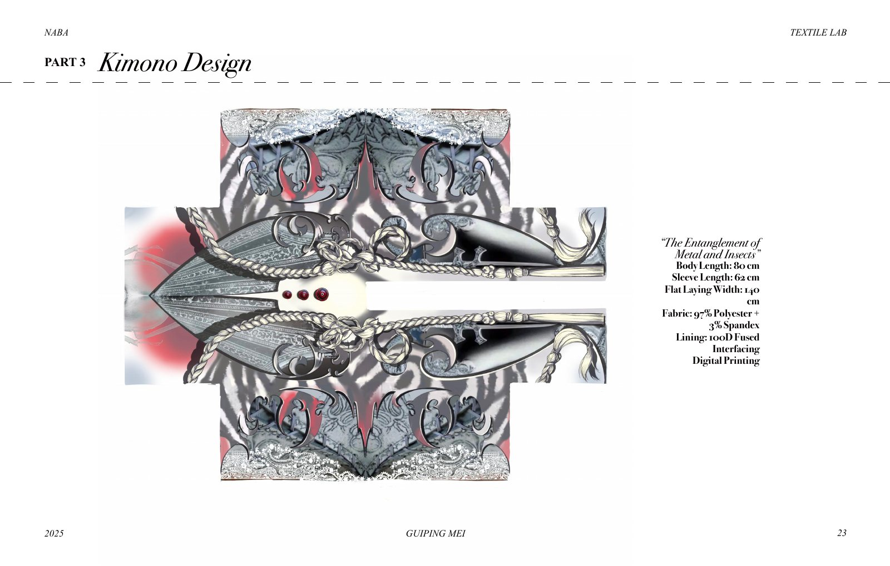
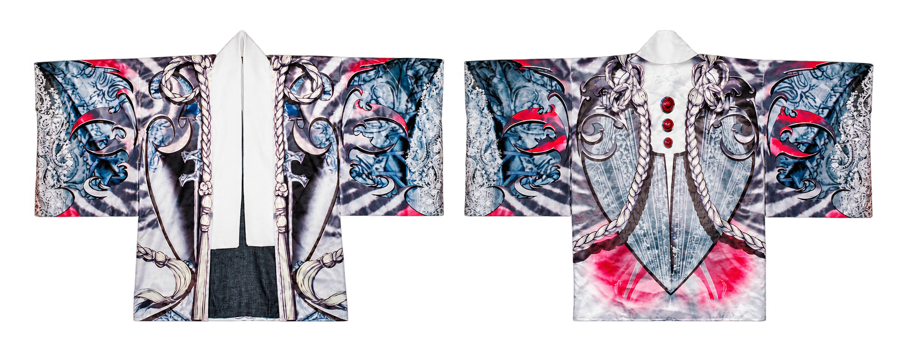
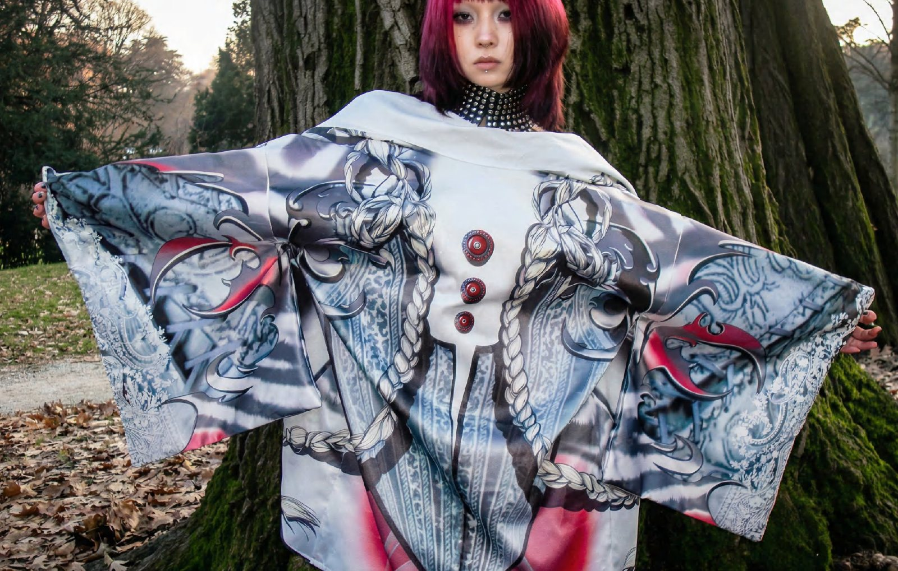

THE PROJECT BEGINS WITH A CONTRADICTION
What happens when protection becomes ornament?
当用于防御的结构变成装饰，坚硬的图像如何在丝绸上重新获得动作？
盔甲、昆虫外骨骼、链条与刀刃被拆解为可以重组的视觉零件。项目不是把图案简单复制到不同载体，而是测试同一套语言如何穿过系列、物体和身体。

Two forces.
One visual organism.
选择一种结构，观察图案系统如何从防御、外骨骼与运动中生长。SELECT A SOURCE TO OPEN THE SPECIMEN.

Curved plates, rivets and engraved edges become a grammar of protection.
20 looks,
one vocabulary.
The 6:3:1 colour rule keeps every look related without making the collection repeat itself.拖动浏览完整系列，双击打开原图。
A portable field of tension.
方巾是一块可以旋转的舞台。中心锁定重量，四角维持动作，链条沿边缘形成闭环；折叠之后，图案依然必须成立。

The image crosses the body.
拖动中间的接缝，对比平面定位与穿着后的连续结构。DRAG THE SEAM TO MOVE FROM PLAN TO BODY.

FLAT PLACEMENT MAP完整平面定位图展示衣身、袖片与门襟之间的连续关系，再进入正反面成衣和穿着状态的对比。
TAP IMAGE TO EXPAND
PLAN / FRONT + BACKThe motif bends at the joint.
The line continues across construction.
The image resolves as a single totem.

Hard structures,
translated into
soft movement.
ONE LANGUAGE / COLLECTION → OBJECT → BODY